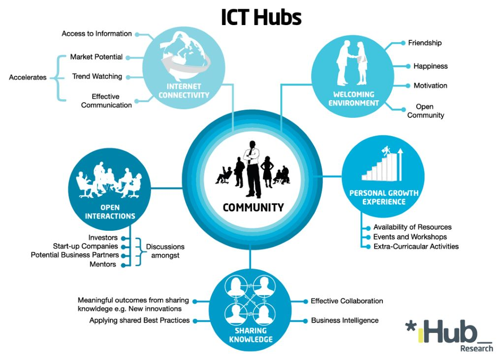

About Us
TechHub is a leading technology organization dedicated to providing innovative solutions to our clients. Knowledge and Skill Development: To promote ongoing education and skill development, tech hubs frequently host hackathons, training sessions, seminars, and workshops. Through these activities, people can learn new skills, improve their problem-solving abilities, and stay current with emerging trends and technologies. Resource Access: Tech hubs frequently provide access to a variety of resources that can foster creativity. Co-working spaces, cutting-edge infrastructure, specialized tools, funding opportunities, mentorship programs, and access to research and development facilities are a few examples of these resources. Tech hubs facilitate experimentation, reduce entry barriers, and aid in the development and testing of novel concepts and technologies by offering these kinds of resources.Collaboration and Networking: Tech hubs serve as meeting places for a variety of professions, such as developers, designers, investors, entrepreneurs, and researchers. Tech hubs provide chances for knowledge exchange, idea generation, and expertise cross-pollination by encouraging networking and collaboration among these people. This collaborative atmosphere encourages idea sharing and facilitates interdisciplinary teamwork, both of which improve innovation.Tech hubs frequently function as the hub of entrepreneurial ecosystems, connecting investors, support organizations, and startups. This ecosystem offers entrepreneurs a helping hand in turning their creative concepts into marketable goods or services. Tech hubs connect entrepreneurs with potential clients or partners and provide mentorship, funding opportunities, and support for business development. This ecosystem supports the emergence and expansion of creative startups and fosters entrepreneurship.
